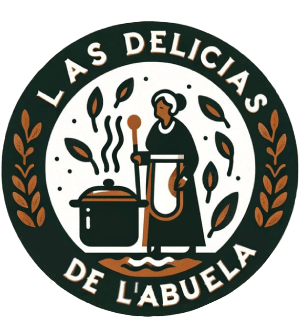

!DOCTYPE html>
Delicias de l´abuela



0
Reporte RCM (Reliability Centered Maintenance)
Objetivo
Mejorar la fiabilidad y disponibilidad de la página web "Delicias de l´Abuela".
1. Identificación de los activos críticos
- Servidor web: Asegura que la página esté disponible 24/7.
- Sistema de gestión de contenidos (CMS): Plataforma sobre la cual se desarrolla y mantiene el contenido del sitio.
- Base de datos: Almacena toda la información crítica, como datos de productos, usuarios y pedidos.
- Interfaz de usuario (UI): Afecta la experiencia del usuario.
- Scripts y APIs: Funcionalidades interactivas y comunicaciones con otros sistemas.
2. Funciones principales de los activos
- Servidor web: Mantener el sitio en línea y accesible.
- CMS: Facilitar la actualización y gestión del contenido.
- Base de datos: Almacenar y recuperar información de manera eficiente.
- UI: Proveer una navegación intuitiva y agradable.
- Scripts y APIs: Ejecutar funcionalidades y permitir integraciones.
3. Fallos potenciales y consecuencias
- Servidor web: Tiempo de inactividad, pérdida de accesibilidad.
- CMS: Fallos en la actualización de contenido, vulnerabilidades de seguridad.
- Base de datos: Pérdida o corrupción de datos.
- UI: Mala experiencia del usuario, tasa de rebote alta.
- Scripts y APIs: Funcionalidades rotas, fallos en la integración.
4. Estrategias de mantenimiento
- Servidor web: Monitoreo constante, copias de seguridad regulares, actualización del software del servidor.
- CMS: Actualizaciones periódicas, parches de seguridad, pruebas regulares.
- Base de datos: Backups diarios, monitoreo de rendimiento, optimización.
- UI: Pruebas de usabilidad, optimización para dispositivos móviles.
- Scripts y APIs: Pruebas unitarias, mantenimiento del código, revisión de integraciones.
5. Implementación y seguimiento
- Definir un calendario de mantenimiento regular.
- Utilizar herramientas de monitoreo como Pingdom o UptimeRobot.
- Realizar auditorías de seguridad y rendimiento periódicas.
Reporte RPM (Reliability Performance Management)
Objetivo
Monitorear y mejorar el desempeño y la fiabilidad del sitio web "Delicias de l´Abuela".
1. Definición de métricas clave de rendimiento
- Tiempo de actividad (Uptime): Porcentaje del tiempo que el sitio está operativo.
- Tiempo de carga de la página: Velocidad con la que las páginas del sitio se cargan.
- Tasa de error: Número de errores que los usuarios encuentran al interactuar con el sitio.
- Rendimiento del servidor: Uso de CPU, memoria y recursos del servidor.
- Tasa de conversión: Porcentaje de visitantes que realizan una compra.
- Tasa de rebote: Porcentaje de visitantes que abandonan el sitio después de ver solo una página.
2. Monitoreo y recolección de datos
- Utilizar herramientas como Google Analytics para monitorear la tasa de conversión y la tasa de rebote.
- Emplear servicios como New Relic o Datadog para el monitoreo del rendimiento del servidor.
- Implementar Google PageSpeed Insights para evaluar y mejorar el tiempo de carga de las páginas.
3. Análisis y evaluación
- Tiempo de actividad (Uptime): Objetivo ≥ 99.9%.
- Tiempo de carga de la página: Objetivo < 3 segundos.
- Tasa de error: Minimizar, idealmente < 0.1%.
- Rendimiento del servidor: Mantener un uso óptimo de los recursos.
- Tasa de conversión: Optimizar a través de mejoras en la UX y promociones.
- Tasa de rebote: Reducir mediante contenido relevante y una mejor experiencia de usuario.
4. Estrategias de mejora continua
- Implementar un CDN (Content Delivery Network) para mejorar los tiempos de carga.
- Optimizar el código y los recursos estáticos (imágenes, scripts) para mejorar el rendimiento.
- Realizar pruebas A/B para optimizar la tasa de conversión.
- Mejorar la calidad del contenido y la navegación para reducir la tasa de rebote.
5. Reportes y comunicación
- Generar reportes mensuales de rendimiento utilizando herramientas como Google Data Studio.
- Realizar reuniones trimestrales para revisar el desempeño y ajustar las estrategias de mantenimiento y mejora.
© Delicias de l'Abuela, Mayo 2024. Todos los derechos reservados.